Morocco is more than its famous landmarks, it's the warmth of Berber hospitality, the silence of the Sahara at sunset, the vibrant colors of ancient medinas, and the stories shared over a glass of mint tea.
At Berber Magic Tours, we are a local Berber team passionate about sharing our homeland through authentic, private, and tailor-made journeys. From the High Atlas Mountains to the golden dunes of the Sahara, we create experiences that connect you with Morocco's landscapes, culture, and people.
Whether you are dreaming of a desert adventure, a mountain trek, or a cultural escape through Morocco's imperial cities, we will help you discover the country in a way that's personal, meaningful, and unforgettable.
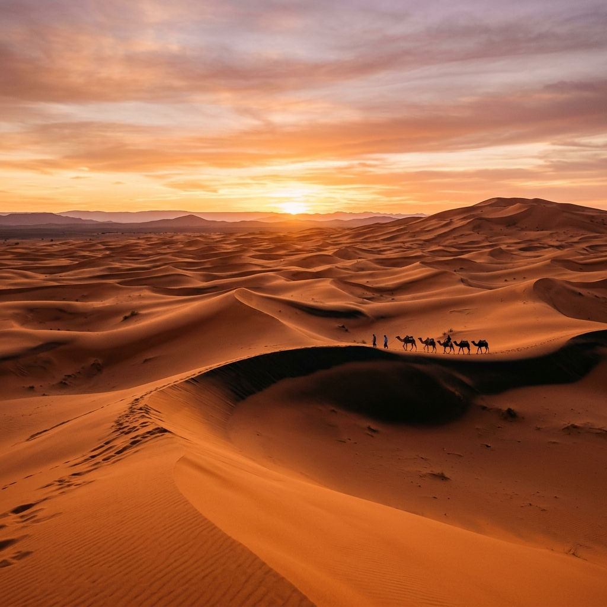
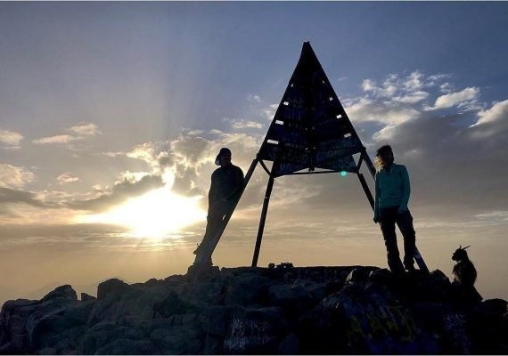
Experience the breathtaking trails, peaks, valleys, and authentic Berber hospitality of the Atlas Mountains.
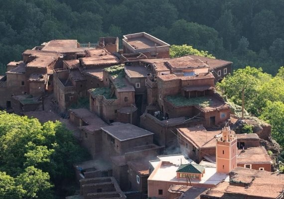
2 DaysHike through the spectacular Azzaden Valley, passing traditional red clay Berber villages, green walnut orchards, and dramatic mountain passes.
Stand on the highest peak in North Africa. A challenging but highly rewarding trek up Mount Toubkal (4,167m) led by local experts.
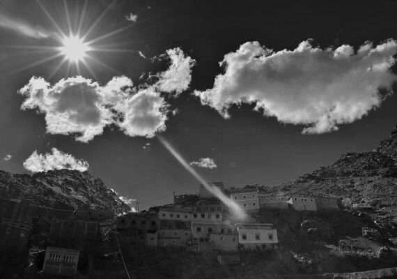
2 DaysExperience authentic Berber hospitality with an overnight stay in a mountain village, surrounded by the majestic peaks of the High Atlas.
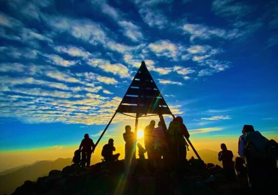
3 DaysClimb Mount Toubkal at a steadier pace over three days, allowing your body to acclimatize better to the altitude for a successful summit.
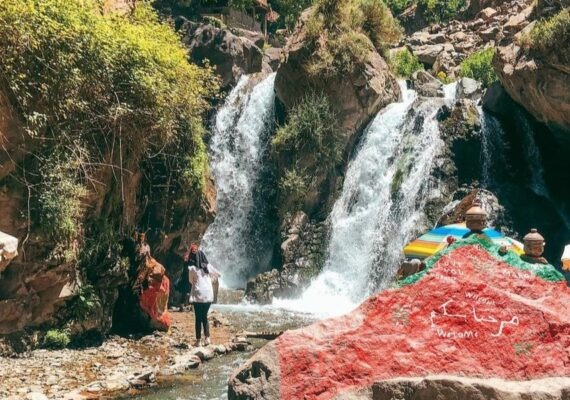
3 DaysEnjoy the best of both worlds. Combine the high valleys and waterfalls of the Atlas Mountains with the stunning rocky dunes of the Agafay Desert.
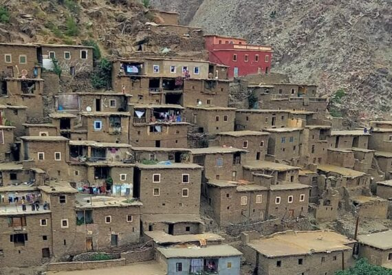
5 DaysEmbark on a comprehensive 5-day journey through High Atlas villages and passes, completing your experience with an authentic Moroccan camel ride.
Journey into the golden dunes of the Sahara, ride camels at sunset, and experience a night in a luxury Berber camp.
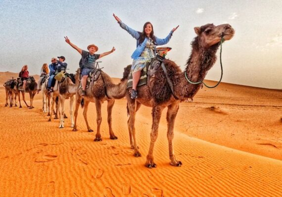
3 DaysExperience the ultimate Sahara adventure. Travel across the High Atlas, visit Ait Benhaddou, ride camels, and spend a magical night in a desert camp under the stars.
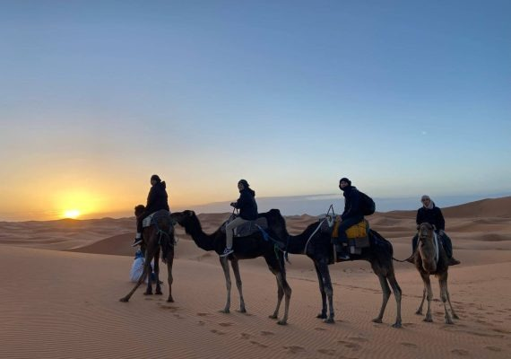
4 DaysAn immersive 4-day loop journey from Marrakech. Spend more time exploring the Dades Valley, Todra Gorge, and the towering sand dunes of Merzouga.
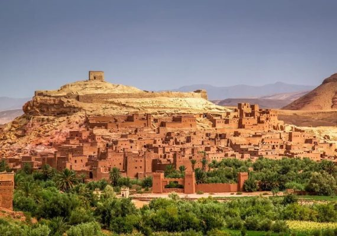
4 DaysA spectacular route connecting Morocco's two most famous cities via the Sahara. Explore the dunes of Merzouga before arriving in the historic city of Fes.
Experience the ultimate contrast of Morocco: trek through green valleys and ancient Berber villages, then journey to the dramatic silence of the Sahara desert.
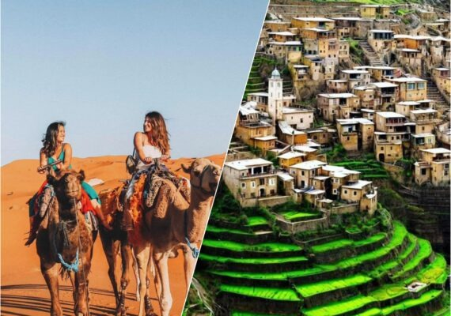
5 DaysTrek through remote Berber villages of the High Atlas, meet the locals, and cross the mountains to ride camels and camp in the Merzouga dunes.
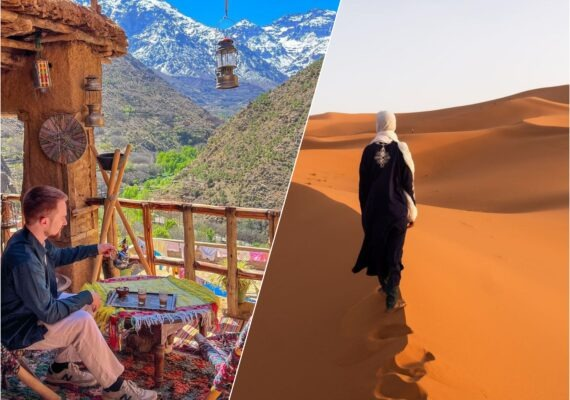
7 DaysOur most complete mountain and desert combination. Explore the culture, hike scenic valleys, stay overnight in local villages, and enjoy a premium Sahara experience.
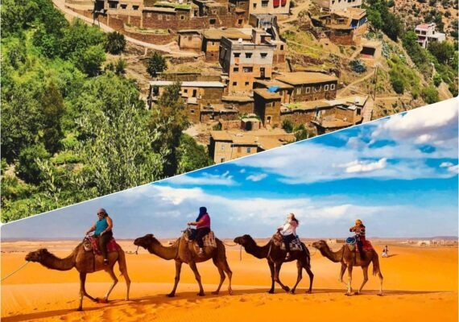
6 DaysA balanced 6-day itinerary taking you from the green peaks of the Atlas Mountains down to the golden dunes of the Sahara, with camel rides and desert camp stays.
Discover the cultural depth, vibrant imperial history, and iconic blue streets of Morocco on our signature holiday tours.
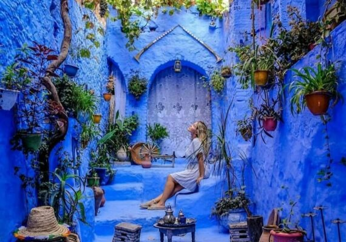
10 DaysThe ultimate Moroccan holiday. Experience Marrakech, the Atlas valleys, Sahara desert, Fes, the blue city of Chefchaouen, and Rabat in 10 unforgettable days.
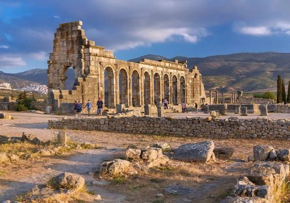
5 DaysImmerse yourself in Morocco's imperial history. Explore Casablanca, the capital Rabat, the ancient Roman ruins of Volubilis, and the medieval medina of Fes.
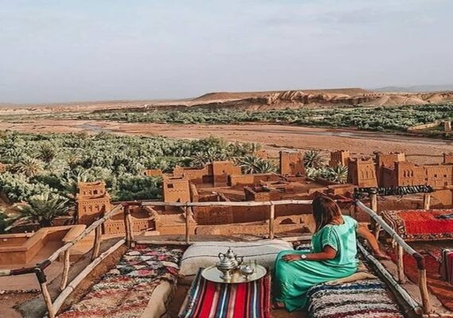
6 DaysConnect Morocco's royal heritage with its desert magic. Travel from Fes to Marrakech through the Sahara, with camel treks and mountain passes.
Ready to create your own unique Moroccan adventure? Tell us what you are dreaming of, and our local experts will craft a personalized itinerary just for you, absolutely free.
Choose your start date, duration, pace, and destinations. We build it completely around you.
From traditional Berber homes and cozy mountain lodges to luxury riads and desert glamping.
Travel safely in comfortable, private 4x4 or minivan with a fully licensed English-speaking local guide.
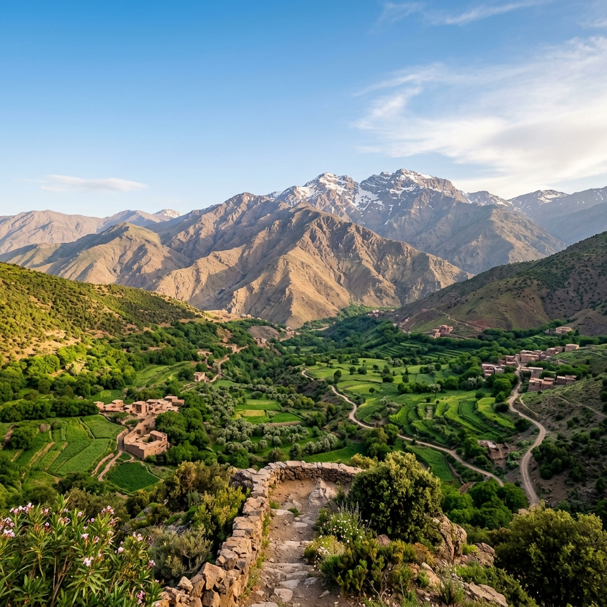
We are passionate about sharing the true essence of Morocco. Our local expertise guarantees an authentic, safe, and truly memorable adventure across this beautiful country.
Born and raised in Morocco, our guides know the hidden gems, deep history, and rich culture.
Connect with local Berber communities and experience the traditions firsthand.
Your safety and comfort are our top priorities from arrival to departure.
Following in our ancestors’ footsteps, we offer modern sustainable adventures. Combining the spirit of discovery with responsible practices, we leave a positive impact on the communities and environments we explore. It’s travel that honors the past and empowers the future.
Join us and explore the world responsibly !
Morocco is a year-round destination. Spring (March to May) and Autumn (September to November) offer the most pleasant weather, with warm days and cool evenings, ideal for both desert tours and mountain treks. Summer can be extremely hot in the desert, while winter brings snow to the high peaks of the Atlas Mountains.
Citizens of many countries, including the United States, Canada, United Kingdom, European Union, and Australia, do not require a visa for tourist stays of up to 90 days. Please ensure your passport is valid for at least 6 months beyond your planned date of entry.
We recommend layering your clothing. Essential items include comfortable hiking pants, moisture-wicking base layers, a warm fleece or down jacket (as mountain nights get very cold), a windproof/waterproof jacket, sturdy worn-in hiking boots, sunscreen, sunglasses, a wide-brimmed hat, and a reusable water bottle.
Our private desert tours typically include transport in a comfortable private 4x4 or minivan with a fully licensed English-speaking local driver-guide, fuel, accommodation in boutique riads/hotels and a desert camp, breakfasts, dinners, camel rides, and guided visits to historic sites like Ait Benhaddou.
Yes, absolutely! We specialize in tailor-made expeditions. You can customize any of our pre-planned tour packages, extend or shorten the duration, select specific accommodations, or use our "Design Your Expedition" interactive form to create a completely custom trip from scratch.
Contact us today to start planning your perfect customized holiday.
Douar Imlil Poste Asni 42152 Marrakech